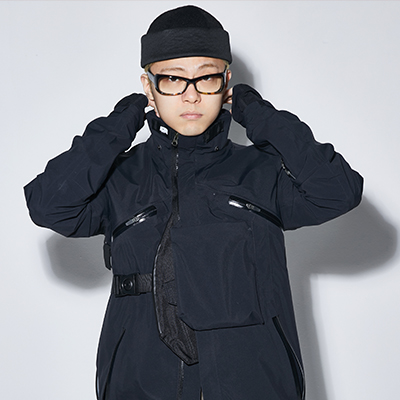

Giriboy (Hangul: 기리보이), is a South Korean rapper, songwriter, and record producer signed to Just Music.

Giriboy began his musical career in 2011 with the single "You Look So Good to Me", released under Just Music Entertainment, a label that had been recently founded by rapper Swings. The following year, he released the EP Fatal Album, much of which he had written years earlier as a high school student. He released a second EP titled Fatal Album II later that year.